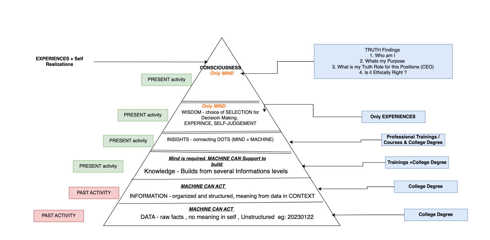

Data to Knowledge Management
In 2006, Clive Humby coined the phrase “data is the new oil” . Raw oil
material is processed in industry for various product outputs, similarly
the raw data in the digital world can be processed to extract various
levels of information and knowledge (Batty, 2022). Data has become the
most valuable asset in today’s digital era. Understanding data helps to
find out the hidden information and knowledge that help to maximize
operational efficiency, understand your own mindset and predicting
others behaviors. Thus students should learn about various data types
and the process of extracting information from data. Even data is the
primary source to make machines intelligent. The data, information,
knowledge, wisdom (DIKW) pyramid model explains about different levels
of data (Weje, 2018; Khera, 2023).
-
Data is an unorganized form of numbers or characters in a raw fact.
Raw data does not provide any meaning without context such as this
number does not have any meaning 20230112. AI tools can be used to
process data for understanding meaning at some context level.
-
Information is structured data having a contextual meaning such as
this number 20230112 has the contextual meaning 12th of January 2023.
AI tools can be used to analyze information from several sources of
data.
-
Knowledge gives an answer related to the “how” question from the
context information. As of now, only the human mind would be able to
provide the knowledge; AI tools and machines function as a support
system to analyze the big data for the knowledge building process.
Knowledge can be built only through experience and it takes enough
time to construct knowledge. One of the biggest hurdles for knowledge
building is that people don't want to share knowledge, since they
may need to share about failure and choices that signifies why a
particular decision was taken? According to KnowledgeMT, there is no
strict way to extract knowledge from an experienced person and note in
a document so that anyone by reading those documents can become an
expert, due to which universities had never produced experienced
managers (KnowledgeMT, 2017, 1:23). However, through DIK pyramid
organization can support a knowledge building system. Often, knowledge
is built upon experimenting things and failure is seen as part of the
learning culture for the knowledge building process. Failure helps to
refine the knowledge. As per Ted talk presented by Kondal Reddy
(2018), 90% of innovation in global corporations happened through
informal knowledge sharing rather than formal meeting discussion. It
is very critical to have a knowledge building system in organization
since several technological products have become obsolete in recent
decades due to innovation in new products. Sharing the knowledge helps
to build the innovative products over time (TEDx Talks, 2018, 8:38).
Students in the digital era should be focused on data and information
sharing to have collaborative discussions that help to gain experience
and build the knowledge over time in the academic year.
-
Wisdom is the applied action from choices of several knowledge,
information, and data at the right time, and right place. Wisdom is at
the conscious level of an individual with deep understanding on the
subject. It gives decision making choices about why something was
chosen as the best choice. Only the human mind would act at the wisdom
level, today students need to be taught about wisdom. Although AI
tools and machines perform several tasks in today's innovative
era, wisdom will always be great assets for human mankind. Wisdom is
known at the context level. The choice of a particular decision in a
given context is influenced by individual wisdom. The same problem
would have different decisions outcomes as per individual wisdom due
to environment context. Wisdom cannot be directly taught to students,
however wisdom examples can be mentioned in descriptive case study
decisions made by leaders.
In brief, data and information present details about past activity.
However, knowledge and wisdom are associated with the present and
future moment that helps to know; what action should be taken now and
in future (Ontotext,n.d.). Computer Science education should focus
from data to wisdom level and show how to get help from intelligent
machines, AI tools to analyze information in a short span that helps
to make better decisions.
